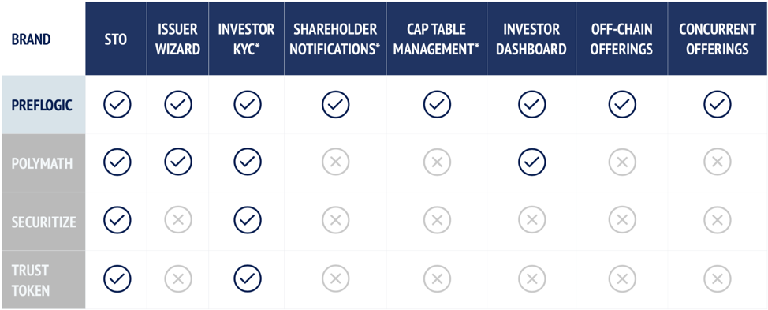

Who We Are
PrefLogic’s STO Wizard and SERC Token provide the tools for ANYONE who wishes to tokenize or offer fractional ownership of ANYTHING of value. PrefLogic is developing a comprehensive financing solution for entrepreneurs and businesses seeking to combine conventional equity relationships with the efficiencies offered by blockchain technology. Our STO Wizard is now capable of auto-building Security Tokens based on our proprietary SERC Token framework. When our market launch is achieved in the first quarter of 2019, our STO Token Gateway will enable a business of any size to custom-build a Security Token, implement a Security Token Offering (STO), and perform the investor relations services that customarily follow on a securities offering.
Why We’re Important
PrefLogic plans to serve the traditional and crypto investor markets where they intersect, with the goal of helping merge the distribution capabilities of the crypto market with the regulated investment structures that underpin investor confidence. The PrefLogic STO Wizard is capable of auto-building Security Tokens based on our proprietary SERC framework. With a library of dozens of customizable smart contracts, the STO Wizard will generate for each client-issuer a SERC token embedded with the issuer’s customized smart contract as well as applications that will assist the issuer in complying with the regulations specific to the SEC offering exemption that the issuer elects. The STO Wizard today can provide applications specific for offerings under Reg D, Reg CF, or Reg S; we are at work on an application specific to a Reg A+ offering.
With lean and adaptable contract architecture, PrefLogic’s goal is to stay in step with changing technology, regulations, and outside innovation. We believe this will enable us to maintain our status in the industry after the STO Token Gateway has been launched.
What’s a Security Token
Security tokens are tokenized financial securities that can be issued to raise funds in the form of equity or debt and can be traded on exchanges in the secondary market.
Security Token vs Utility Token
A utility token provides users access to a product or service on the blockchain. Utility tokens are not designed as investments although many people buy them in hopes that they will increase in value as the demand for the company’s goods or services will increase. A decision on the legality and regulatory adherence has yet to be finalized but comments by regulators indicate most are illegal securities. A Security Token is asset or investment backed and can provide a variety of benefits to the holder. These benefits may include equity, ownership, profit sharing, dividends, and voting rights, all executed via a smart contract.
Comptetition

FAQ
-
One cannot pre-announce or precondition a Market prior to an offering being released. The difference between a SECURITY AND UTILITY token is worlds apart. The investor gets an EXPENSIVE WATCHDOG when he buys a US security; the SEC. The US Stock Markets hold the very highest status and are the most desired in the WORLD by foreign investors. WHY: because 4200 SEC WATCHDOG's to govern over 4000 actively traded NYSE and NASDAQ companies and 10,000 plus OTC. Rules are Rules, and announcements will be made accordingly.
-
The SEC has exemptions which allow Investors of all types. Any offering will be made in accordance with all US laws and regulations.
-
PrefLogic is structured as a traditional company with common stock, with our ledger being stored on the Blockchain as per Delaware law. We feel this structure gives us a competitive advantage by providing multiple paths to liquidity to our Investors.